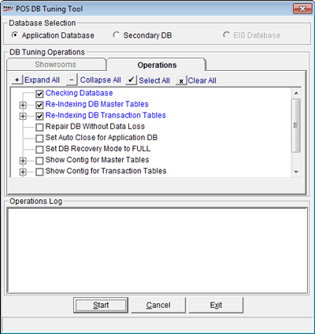

Appropriate database maintenance is required to fine tune performance of the application. Handling large volumes of data might require occasional checking of database for possible errors, truncation of log and re-indexing master tables or transaction tables. This module can be used for all these activities as well as shrinking the database wherever possible.
How to reach: Housekeeping > Database Tuning Utility
The Login window is displayed to confirm the supervisor's login ID and password.
User ID: Enter supervisor’s login ID (Default is super).
Password: Enter supervisor’s password (Default is nothing).
The POS DB Tuning Tool window is displayed.

Database Selection: Click Application Database to tune the current application database.
In the Operations tab, choose the required operations to be carried out. You may click to expand all options,  to shrink the tree structure,
to shrink the tree structure,  to select all operations or to clear the selections made.
to select all operations or to clear the selections made.
Operations Log: On completion of the selected operations, the details are displayed.
Note: If Secondary Database and EIS Database are available, the corresponding options will be enabled in Database Selection.